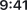
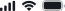

Processing Case
AI 분석 처리 중 화면 (node 1:824, 첫 변형). Figma에는 5개 변형이 있으나 스피너 회전 각도/메시지만 다를 가능성.


채팅내용을 분석 하고 있습니다
입력하신 내용을 바탕으로
최적의 법률 프레임워크를 구성 중입니다.
약 10~30초 소요
Secure Data Processing
SHIELD는 모든 데이터를 암호화하여 처리하며, 분석 완료 후 안전하게 결과를 전달합니다.